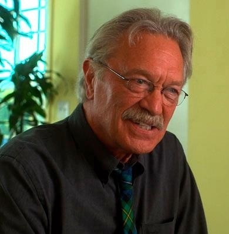
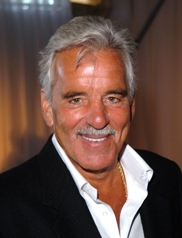
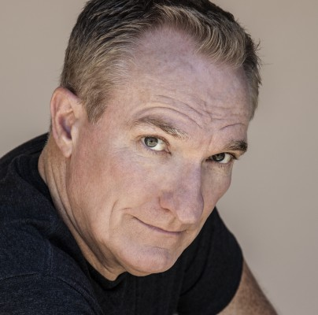
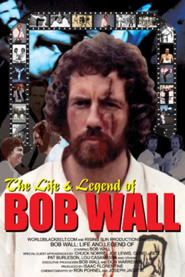
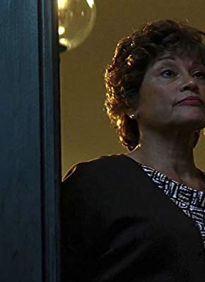

#3666 Cusack - Der Schweigsame
Alternativ: Code of Silence


 IMDB-Wertung: 6.0 / 10
IMDB-Wertung: 6.0 / 10  Metascore: 0
Metascore: 0 
Die Polizei in Chicago plant, in einer großen Aktion eine kolumbianische Rauschgifthändlerbande auffliegen zu lassen. Doch die Mafia kommt den Cops zuvor - von nun an herrscht Krieg zwischen den rivalisierenden Gangsterbanden. Da die Polizei mehr oder weniger ratlos und unfähig reagiert, wird Inspektor Cusack notgedrungen zum Einzelkämpfer. Der schweigsame Einzelgänger und Außenseiter liefert den Gangstern einen erbitterten und gnadenlosen Kampf.
Jahr: 1985
Dauer: 100 Minuten
FSK: 16
Land: USA Studio: Orion PicturesTonspuren:
Untertitel: Deutsch,
Auflösung: 1080p (1920x1040) Größe: 9185 MB
Genre: Action, Thriller, Drama, Krimi
Regisseur: Andrew Davis
Drehbuch: Brian Lynch
Soundtrack:
Darsteller:
 Chuck Norris als Eddie Cusack
Chuck Norris als Eddie Cusack Henry Silva als Luis Comacho
Henry Silva als Luis Comacho Bert Remsen als Commander Kates
Bert Remsen als Commander Kates-  Mike Genovese als Tony Luna
- Allen Hamilton als Ted Pirelli
 Molly Hagan als Diana Luna
Molly Hagan als Diana Luna Ron Dean als Det. Brennan
Ron Dean als Det. Brennan-  Dennis Farina als Det. Dorato
 John Mahoney als 'Prowler' Representative
John Mahoney als 'Prowler' Representative-  Dennis Cockrum als Hood in Tavern
- Alex Stevens als Angel
- James Fierro als Vito
-  Robert Wall als Thug , uncredited
- Nathan Davis als Felix Scalese
- Ralph Foody als Det. Cragie
- Ron Henriquez als Victor Comacho
- Joe Guzaldo als Det. Nick Kopalas
- Wilbert Bradley als Spider
- Gene Barge als Det. Music
- Mario Nieves als Pompas
- Miguel Nino als Efren
- Ronnie Barron als Doc
- Joseph F. Kosala als Lieutenant Kobas
- Lou Damiani als Lou Gamiani
-  Nydia Rodriguez Terracina als Partida
- Andre Marquis als Sanchez
- Zaid Farid als Hood in Tavern
- Howard Jackson als Officer Johnson
- Don Pike als Hood on Yacht
- Les Podewell als Coroner
- Trish Schaefer als Molly Luna
- Martha Oton als Tony Luna's Mother
- Jack Kandel als Eenie Verona
- Tom Letuli als Samo
- Jeff Hoke als Gallery Artist
- Gary Pike als Scalese's Driver
- Frank Strocchia als Police Gym Attendant
- Jack Decker als Dispatcher #1
- Sue Kelly als Dispatcher #2
- Michael E. Bradley als Dispatcher #3
- Sally Anne Waranch als Children's Counselor
- Jerry Tullos als Review Board Clerk
- Catalina Caceres als Grandmother at Hearing
- Shirley Kelly als Artist's Benefactor
- Angela Zimm als Gallery Person
- David Banoso als Camacho Thug , uncredited
- David Hernandez als Court Observer , uncredited
- Ross L. Kulma als Tailor , uncredited
- Robert Minkoff als Bit , uncredited
Datei: X:\Person\Chuck Norris\Cusack - Der Schweigsame (1985, FSK16, 1920x1040).mkv seit 15.05.2016
Festplatte: HD Collection-7+mehr(A-Z)+Person
 Es gibt insgesamt 17 Filme in der Gruppe 'Person\Chuck Norris'
Es gibt insgesamt 17 Filme in der Gruppe 'Person\Chuck Norris'